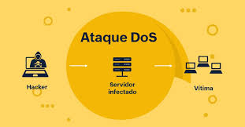

A Segurança da Informação é uma área crítica em Tecnologia da Informação (TI), preocupada com a proteção dos sistemas, redes e dados contra ameaças potenciais. Entre os desafios enfrentados pelos profissionais de segurança da informação, estão os ataques de negação de serviço (DoS - Denial of Service), que visam comprometer a disponibilidade de recursos online. Esses ataques podem causar interrupções nos serviços, prejudicando a experiência do usuário e afetando a reputação e os negócios das organizações. Neste contexto, entender os diferentes tipos de ataques DoS e as medidas de proteção adequadas é essencial para garantir a integridade e a continuidade das operações online.
Engenharia social
Os ataques de negação de serviço (DoS) representam uma forma comum de ataque cibernético, onde os agressores buscam sobrecarregar os recursos de sistemas, redes ou serviços online, tornando-os inacessíveis para usuários legítimos. Uma técnica comum usada em ataques DoS é o envio de uma grande quantidade de tráfego de dados para o alvo, de forma a saturar sua largura de banda ou esgotar os recursos do sistema. Isso pode ser realizado por meio de várias técnicas, como o envio de solicitações falsas, exploração de vulnerabilidades de software ou o uso de botnets, redes de computadores comprometidos controlados remotamente pelos atacantes.
Além do DoS tradicional, existe o DDoS (Distributed Denial of Service), uma variação mais sofisticada onde múltiplos dispositivos são coordenados para lançar o ataque. Esses dispositivos podem ser computadores, servidores, dispositivos IoT (Internet of Things) ou até mesmo dispositivos móveis comprometidos. O DDoS é ainda mais difícil de mitigar, pois os ataques vêm de diversas fontes, dificultando a identificação e o bloqueio dos agressores. Como resultado, organizações precisam implementar soluções robustas de proteção contra ataques DDoS, incluindo sistemas de detecção e prevenção de intrusões (IDPS), serviços de mitigação de tráfego e parcerias com provedores de serviços de segurança.
Além dos danos diretos à disponibilidade de serviços, os ataques DoS podem causar impactos significativos em termos de reputação, confiança do cliente e perdas financeiras para organizações afetadas. A recuperação após um ataque DoS pode ser demorada e custosa, envolvendo investigações forenses, reparo de sistemas comprometidos e implementação de medidas adicionais de segurança. Portanto, a prevenção proativa e a resposta rápida a ataques DoS são essenciais para proteger a infraestrutura de TI e garantir a continuidade dos negócios em um ambiente cada vez mais digital e interconectado.